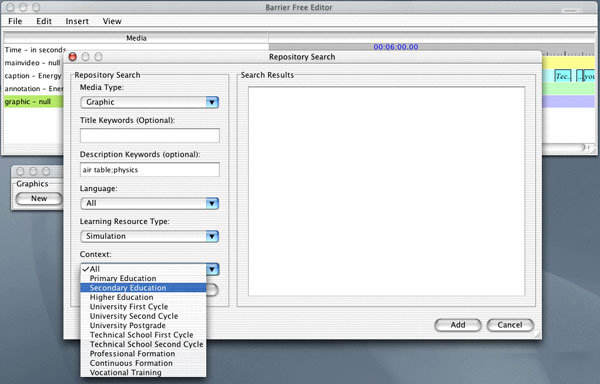

Examples : Authoring Tool : Searching
This window shows the Authoring Tool interface for searching the Learning Object Repository for material. The left side of the dialog allows the user to specify search criteria, while search results appear to the right.